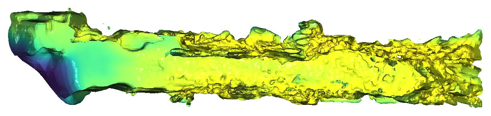
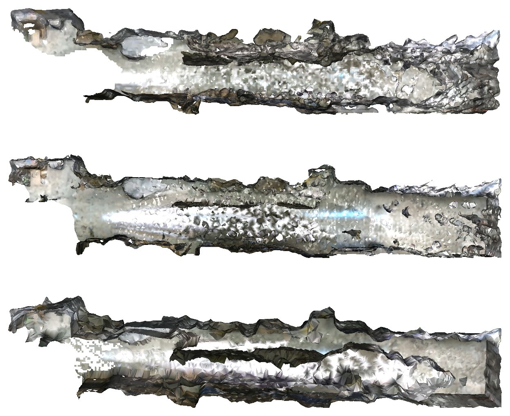
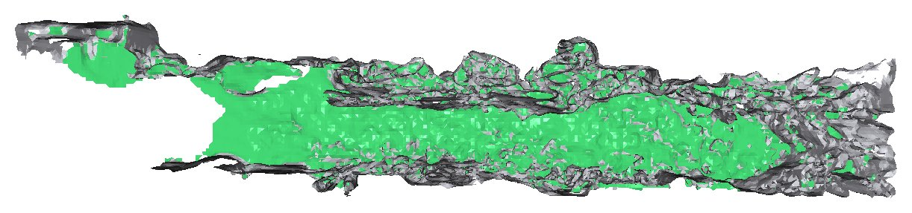
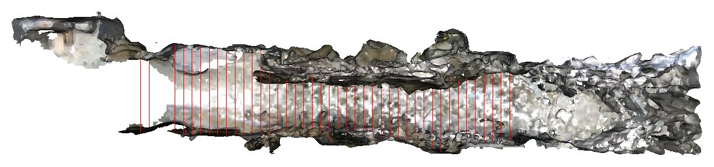
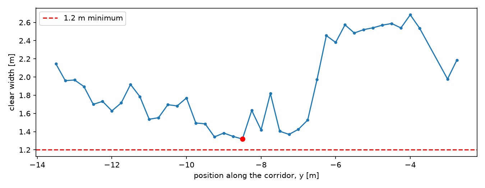

Open your Week 4 project again
No new project this week. Your Week 4 facility-scan folder already has open3d and the class data, so we carry on in it. Move into the project folder:
cd facility-scanActivate the virtual environment:
.venv\Scripts\activate.bat.venv\Scripts\Activate.ps1source .venv/bin/activateCheck the libraries and the data are both there:
python -c "import open3d as o3d; print(o3d.io.read_point_cloud('data/facility_scan_color.ply'))"It should print PointCloud with 660034 points.
Create the project and add the libraries, then download the class data into it as in Week 4, step 5.
uv init --python 3.12 --no-package facility-scan
cd facility-scan
uv add numpy pandas matplotlib open3dWhat is a mesh?
A point cloud is only points. The space between them is empty, so it can't answer "what is the area of this wall?". A mesh stores points (vertices) plus which three points form each triangle. The triangles make a surface, so we can compute area, volume and "how far is the wall from here?".
| vertices | Corner positions (an N × 3 array: x, y, z). |
| triangles | Three vertex numbers per triangle (an M × 3 array). Numbers, not positions. |
| normals | Which way each triangle (or vertex) faces. A floor faces up, a wall faces sideways. |
Let's build a tiny mesh by hand. Create a new file mesh_basics.py:
import numpy as np
import open3d as o3d
# 1. A mesh made by hand: a 2 m x 1 m floor tile = 4 corners + 2 triangles
vertices = np.array([
[0, 0, 0], # 0
[2, 0, 0], # 1
[2, 1, 0], # 2
[0, 1, 0], # 3
], dtype=float)
triangles = np.array([
[0, 1, 2], # first triangle uses corners 0, 1, 2
[0, 2, 3], # second triangle uses corners 0, 2, 3
])
tile = o3d.geometry.TriangleMesh(
o3d.utility.Vector3dVector(vertices),
o3d.utility.Vector3iVector(triangles),
)
print(tile)
print(f"Tile area : {tile.get_surface_area():.2f} m²")
# 2. A ready-made mesh: a 4 m x 3 m x 2.5 m room (a box)
room = o3d.geometry.TriangleMesh.create_box(width=4, height=3, depth=2.5)
print(room)
print(f"Room surface : {room.get_surface_area():.2f} m²")
print(f"Watertight? : {room.is_watertight()}")
print(f"Room volume : {room.get_volume():.2f} m³")
# 3. Show both. Press W in the window to see the triangles (wireframe)
room.compute_vertex_normals()
room.paint_uniform_color([0.6, 0.8, 0.8])
tile.paint_uniform_color([0.9, 0.5, 0.2])
tile.translate([5, 0, 0])
o3d.visualization.draw_geometries([room, tile], window_name="Mesh basics",
mesh_show_wireframe=True, mesh_show_back_face=True)python mesh_basics.pyTriangleMesh with 4 points and 2 triangles.
Tile area : 2.00 m²
TriangleMesh with 8 points and 12 triangles.
Room surface : 59.00 m²
Watertight? : True
Room volume : 30.00 m³
6 box faces × 2 triangles = 12. Surface = 2×(4×3 + 4×2.5 + 3×2.5) = 59 m². A mesh that is fully closed, with no holes, is watertight; only those have a volume: 4 × 3 × 2.5 = 30 m³.
Delete the second row [0, 2, 3] from triangles and run again. What is the tile area now? What do you see in the window?
Prepare the points: crop, thin, clean, normals
Meshing algorithms get slow with many points, get confused by noise, and need normals (which way the surface faces at each point). So we prepare the points first. New file prepare_points.py:
import open3d as o3d
pcd = o3d.io.read_point_cloud("data/facility_scan_color.ply")
print(f"Full scan : {len(pcd.points):,} points")
# 1. Keep only the corridor (a box: min corner, max corner, in metres)
box = o3d.geometry.AxisAlignedBoundingBox([-1.7, -18.9, -1.0], [2.9, 0.9, 3.0])
pcd = pcd.crop(box)
print(f"Corridor only : {len(pcd.points):,} points")
# 2. Thin it out: keep one point per 8 cm cube (faster meshing)
pcd = pcd.voxel_down_sample(voxel_size=0.08)
print(f"After thinning : {len(pcd.points):,} points")
# 3. Remove stray points that float far from their neighbours
pcd, kept = pcd.remove_statistical_outlier(nb_neighbors=20, std_ratio=2.0)
print(f"After cleaning : {len(pcd.points):,} points")
# 4. Normals: which way each little patch of surface is facing
pcd.estimate_normals(o3d.geometry.KDTreeSearchParamHybrid(radius=0.25, max_nn=30))
pcd.orient_normals_consistent_tangent_plane(15)
o3d.io.write_point_cloud("corridor_points.ply", pcd)
print("Saved corridor_points.ply")
# Press N in the window to show the normals as little lines
o3d.visualization.draw_geometries([pcd], window_name="Corridor points + normals")python prepare_points.pyFull scan : 660,034 points
Corridor only : 427,516 points
After thinning : 145,113 points
After cleaning : 140,760 points
Saved corridor_points.ply| crop | Keep a box around the corridor; drop the other rooms and the space past the stairs. |
| voxel_down_sample | Keep one point per 8 cm cube → about a third of the points. |
| remove_statistical_outlier | Delete points whose average distance to their 20 neighbours is unusually large (noise floating in the air). |
| estimate_normals | Fit a tiny plane to the neighbours within 25 cm to get the direction. |
| orient_normals_… | Flip normals so they all point to a consistent side. |
In the window, zoom in and press N to show the normals. Which way do the floor normals point? And the walls?
Your first mesh: Poisson reconstruction
Poisson reconstruction looks at the points and normals and finds one smooth surface that separates "inside" from "outside". Good: almost no holes. Bad: it invents surface where there were no points. So it also returns a density per vertex (how many real points were nearby), and we use that to cut the invented parts away. New file mesh_poisson.py:
import time
import numpy as np
import matplotlib.pyplot as plt
import open3d as o3d
pcd = o3d.io.read_point_cloud("corridor_points.ply")
# 1. Poisson reconstruction: fit one smooth surface through all the points
t0 = time.time()
mesh, density = o3d.geometry.TriangleMesh.create_from_point_cloud_poisson(pcd, depth=8)
density = np.asarray(density)
mesh.compute_vertex_normals()
print(f"Poisson mesh : {len(mesh.triangles):,} triangles in {time.time() - t0:.1f} s")
# Cut off everything above z = 1.2 m (ceiling + upper walls) so we can look inside
no_ceiling = o3d.geometry.AxisAlignedBoundingBox([-5, -25, -2], [5, 5, 1.2])
# 2. Look at a copy coloured by density: dark blue = few scan points nearby (surface was guessed)
look = o3d.geometry.TriangleMesh(mesh)
d01 = (density - density.min()) / (density.max() - density.min())
look.vertex_colors = o3d.utility.Vector3dVector(plt.cm.viridis(d01)[:, :3])
o3d.visualization.draw_geometries([look.crop(no_ceiling)], window_name="Poisson — coloured by density",
mesh_show_back_face=True)
# 3. Trim: delete the 5 % of vertices with the lowest density, keep only the corridor box
mesh.remove_vertices_by_mask(density < np.quantile(density, 0.05))
mesh = mesh.crop(pcd.get_axis_aligned_bounding_box())
print(f"After trimming : {len(mesh.triangles):,} triangles")
o3d.io.write_triangle_mesh("corridor_poisson.ply", mesh)
print("Saved corridor_poisson.ply")
o3d.visualization.draw_geometries([mesh.crop(no_ceiling)], window_name="Poisson mesh (trimmed)",
mesh_show_back_face=True)python mesh_poisson.pyPoisson mesh : 165,374 triangles in 3.4 s
After trimming : 155,588 triangles
Saved corridor_poisson.plyTwo windows open, one after the other (close the first to see the second). Both have the ceiling cut off, so you can look down into the corridor.


Poisson splits space into 2depth cells per side. For this ~20 m corridor, depth=8 → 256 cells → about 8 cm, the same as our point spacing. Each +1 halves the cell size and gives roughly 4–6× more triangles.
Change to depth=9 and run it. What happens to the triangle count, the time and the file size? Does it look better? (Change it back to 8 afterwards — the next steps assume the depth-8 mesh.)
Compare three methods
Run two other algorithms on the same points and put them next to Poisson.
| Poisson | Fits one smooth surface. Few holes, but may invent surface that isn't there. |
| Ball pivoting | Rolls a ball over the points and joins every three points it touches at once. Uses only real points, but leaves holes where points are sparse. |
| Alpha shape | Wraps the points and keeps only triangles smaller than alpha. Fast but rough, and thin walls get wrapped on both sides. |
New file mesh_compare.py:
import time
import open3d as o3d
pcd = o3d.io.read_point_cloud("corridor_points.ply")
def open_edges(mesh):
"""Edges used by only one triangle = the border of a hole."""
all_bad = mesh.get_non_manifold_edges(allow_boundary_edges=False)
not_border = mesh.get_non_manifold_edges(allow_boundary_edges=True)
return len(all_bad) - len(not_border)
results = {}
# A. Poisson (made in the last step)
results["Poisson"] = (o3d.io.read_triangle_mesh("corridor_poisson.ply"), None)
# B. Ball pivoting: roll a ball over the points, join every 3 points it touches
t0 = time.time()
radii = o3d.utility.DoubleVector([0.12, 0.24])
bpa = o3d.geometry.TriangleMesh.create_from_point_cloud_ball_pivoting(pcd, radii)
results["Ball pivoting"] = (bpa, time.time() - t0)
# C. Alpha shape: wrap the points, keep triangles smaller than alpha
t0 = time.time()
alpha = o3d.geometry.TriangleMesh.create_from_point_cloud_alpha_shape(pcd, alpha=0.24)
results["Alpha shape"] = (alpha, time.time() - t0)
print(f"{'method':<15}{'triangles':>11}{'seconds':>9}{'area m²':>10}{'open edges':>12}")
for name, (mesh, secs) in results.items():
secs = "-" if secs is None else f"{secs:.1f}"
print(f"{name:<15}{len(mesh.triangles):>11,}{secs:>9}"
f"{mesh.get_surface_area():>10.1f}{open_edges(mesh):>12,}")
o3d.io.write_triangle_mesh("corridor_bpa.ply", bpa)
# Show all three one above the other (6 m apart), ceiling cut off so we can look inside
no_ceiling = o3d.geometry.AxisAlignedBoundingBox([-5, -25, -2], [5, 5, 1.2])
shown = []
for i, (mesh, _) in enumerate(results.values()):
m = mesh.crop(no_ceiling).translate([-6 * i, 0, 0])
m.compute_vertex_normals()
shown.append(m)
o3d.visualization.draw_geometries(shown, window_name="Poisson | Ball pivoting | Alpha shape",
mesh_show_back_face=True)python mesh_compare.pymethod triangles seconds area m² open edges
Poisson 155,588 - 395.4 1,158
Ball pivoting 63,836 14.0 252.2 7,734
Alpha shape 60,024 3.0 354.8 0
Open edges are edges used by only one triangle: the rim of a hole. Ball pivoting has the most holes (7,734), so the smallest area. Alpha shape has zero holes but wraps thin things from both sides, so its area is inflated. Poisson sits in between. "Which number is right?" — you answer that against the design in the step 8 exercise.
Web viewers and game engines need fewer triangles. Add this to the end of the script to cut the Poisson mesh down to 20,000 triangles. How much does the area change?
small = results["Poisson"][0].simplify_quadric_decimation(target_number_of_triangles=20000)
print(f"Simplified : {len(small.triangles):,} triangles, {small.get_surface_area():.1f} m²")
o3d.io.write_triangle_mesh("corridor_small.obj", small)Measure the building ①: floor, wall and ceiling area
A cleaning company quotes per m² of floor; a painter quotes per m² of wall. Every triangle in the mesh has an area and a direction, so we only need to sort them by direction and add them up:
| area | Area of triangle ABC = ½ · |AB × AC| (half the length of the cross product of two edges). |
| floor / ceiling | Normal nearly vertical (|nz| > 0.8). Low = floor, high = ceiling. |
| wall | Everything else (faces sideways). |
New file measure_areas.py:
import numpy as np
import open3d as o3d
mesh = o3d.io.read_triangle_mesh("corridor_poisson.ply")
mesh.compute_triangle_normals()
v = np.asarray(mesh.vertices) # corner positions (N x 3)
t = np.asarray(mesh.triangles) # 3 corner numbers per triangle (M x 3)
n = np.asarray(mesh.triangle_normals) # which way each triangle faces (M x 3)
# 1. Area of every triangle = half the length of the cross product of two edges
a, b, c = v[t[:, 0]], v[t[:, 1]], v[t[:, 2]]
area = 0.5 * np.linalg.norm(np.cross(b - a, c - a), axis=1)
centre_z = (a[:, 2] + b[:, 2] + c[:, 2]) / 3
print(f"Total surface : {area.sum():6.1f} m² (Open3D: {mesh.get_surface_area():.1f} m²)")
# 2. Sort the triangles by the way they face
flat = np.abs(n[:, 2]) > 0.8 # facing (almost) straight up or down
is_floor = flat & (centre_z < 0.8) # the floor is near z = -0.5, the ceiling near z = 2
is_ceiling = flat & (centre_z >= 0.8)
is_wall = ~flat # everything else faces sideways
floor_m2 = area[is_floor].sum()
wall_m2 = area[is_wall].sum()
ceiling_m2 = area[is_ceiling].sum()
height = np.median(centre_z[is_ceiling]) - np.median(centre_z[is_floor])
print(f"Floor : {floor_m2:6.1f} m²")
print(f"Walls : {wall_m2:6.1f} m²")
print(f"Ceiling : {ceiling_m2:6.1f} m²")
print(f"Room height : {height:6.2f} m (median ceiling z - median floor z)")
# 3. A facility manager's quote: 2 coats of paint, 1 litre covers 10 m²
print(f"Wall paint : {wall_m2 * 2 / 10:6.0f} litres")
# 4. Show each class in its own colour (ceiling left out so we can look inside)
no_ceiling = o3d.geometry.AxisAlignedBoundingBox([-5, -25, -2], [5, 5, 1.2])
def part(mask, colour):
p = o3d.geometry.TriangleMesh(mesh)
p.remove_triangles_by_mask(~mask)
p.remove_unreferenced_vertices()
p.compute_vertex_normals()
p.paint_uniform_color(colour)
return p.crop(no_ceiling)
floor = part(is_floor, [0.20, 0.65, 0.35]) # green
walls = part(is_wall, [0.75, 0.75, 0.78]) # grey
ceiling = part(is_ceiling, [0.95, 0.55, 0.15]) # orange
o3d.visualization.draw_geometries([floor, walls], window_name="Floor (green) and walls (grey)",
mesh_show_back_face=True)python measure_areas.pyTotal surface : 395.4 m² (Open3D: 395.4 m²)
Floor : 54.5 m²
Walls : 274.7 m²
Ceiling : 66.2 m²
Room height : 2.29 m (median ceiling z - median floor z)
Wall paint : 55 litres
274.7 m² of wall is far too much: this corridor has about 28 m of wall, 2.5 m high → about 70 m². The extra comes from the sides of shelves and objects, the stairs and side spaces, and "ghost walls" where small errors in the robot's position (drift) recorded the same wall twice, slightly offset. When you measure from a scan mesh, always check against another source (the design, a tape measure).
① Add ceiling to the list on the last line to see the ceiling too. ② Change the file to corridor_bpa.ply and measure the ball-pivoting mesh. Which number changes the most?
Measure the building ②: a virtual tape measure for corridor width
For fire escape and wheelchair access, a corridor needs a minimum clear width (for example, Korea's barrier-free standard asks for at least 1.2 m). Shelves and stored items reduce the width people can actually pass through. With a mesh we can cast a ray and get the distance to the first surface it hits — with points only, the ray would slip through the gaps. We stand every 25 cm along the corridor and shoot one ray left and one right. New file measure_width.py:
import numpy as np
import matplotlib.pyplot as plt
import open3d as o3d
mesh = o3d.io.read_triangle_mesh("corridor_poisson.ply")
# 1. Put the triangles in a ray-casting scene
scene = o3d.t.geometry.RaycastingScene()
scene.add_triangles(o3d.t.geometry.TriangleMesh.from_legacy(mesh))
# 2. Stand in the corridor (x = 0.2 m, z = 0.8 m) every 25 cm along it
ys = np.arange(-13.5, -2.5, 0.25)
origins = np.column_stack([np.full_like(ys, 0.2), ys, np.full_like(ys, 0.8)])
def shoot(direction):
"""Cast one ray from every origin; return the distance to the first triangle hit."""
rays = np.hstack([origins, np.tile(direction, (len(ys), 1))]).astype(np.float32)
return scene.cast_rays(o3d.core.Tensor(rays))["t_hit"].numpy() # inf = hit nothing
left = shoot([-1, 0, 0])
right = shoot([1, 0, 0])
width = left + right
ok = np.isfinite(width) # skip spots where a ray escaped through a hole or door
# 3. Report
i = np.argmin(np.where(ok, width, np.inf))
print(f"Measured spots : {ok.sum()} of {len(ys)}")
print(f"Median width : {np.median(width[ok]):.2f} m")
print(f"Narrowest : {width[i]:.2f} m at y = {ys[i]:.2f} m")
print(f"Spots under 1.2 m: {(width[ok] < 1.2).sum()}")
# 4. Width profile along the corridor
plt.figure(figsize=(9, 3.5))
plt.plot(ys[ok], width[ok], ".-")
plt.axhline(1.2, color="red", ls="--", label="1.2 m minimum")
plt.plot(ys[i], width[i], "ro")
plt.xlabel("position along the corridor, y [m]")
plt.ylabel("clear width [m]")
plt.legend()
plt.tight_layout()
plt.savefig("width_profile.png", dpi=150)
print("Saved width_profile.png")
# 5. Draw the rays in 3D: one line from the left hit to the right hit
ends_l = origins[ok] + left[ok, None] * [-1, 0, 0]
ends_r = origins[ok] + right[ok, None] * [1, 0, 0]
lines = o3d.geometry.LineSet(
o3d.utility.Vector3dVector(np.vstack([ends_l, ends_r])),
o3d.utility.Vector2iVector([[k, k + ok.sum()] for k in range(ok.sum())]),
)
lines.paint_uniform_color([1, 0, 0])
no_ceiling = o3d.geometry.AxisAlignedBoundingBox([-5, -25, -2], [5, 5, 1.2])
mesh.compute_vertex_normals()
o3d.visualization.draw_geometries([mesh.crop(no_ceiling), lines], window_name="Virtual tape measure",
mesh_show_back_face=True)
plt.show()python measure_width.pyMeasured spots : 42 of 44
Median width : 1.78 m
Narrowest : 1.32 m at y = -8.50 m
Spots under 1.2 m: 0
Saved width_profile.png

If a ray hits no triangle, its distance is inf (infinity): an open doorway or a hole in the mesh. That's why 2 of the 44 spots were skipped. How many would be skipped with the ball-pivoting mesh, which has more holes?
① Change the ray height from 0.8 to 0.0 (about 50 cm above the floor). Does the narrowest spot move? ② Add shoot([0, 0, 1]) and shoot([0, 0, -1]) to measure the ceiling height.
Exercise: Is the mesh good enough for a quote?
Background. A cleaning company has asked for a quote for the corridor floor. The facility manager would like to use the robot's scan mesh instead of measuring again with a tape. But as step 6 showed, mesh numbers can be wrong. Use last week's BIM design (design.ifc) as the reference and find out which mesh you can trust, and how much.
You are given:
| design.ifc | The corridor's BIM design: one floor slab (IfcSlab) and 9 walls (IfcWall). Same coordinates as the scan. |
| corridor_poisson.ply | Your Poisson mesh from step 4. |
| corridor_bpa.ply | Your ball-pivoting mesh from step 5. |
Skip this if you already added it for the Week 4 exercise:
uv add ifcopenshellYour task. Create survey.py. When you run it, it must:
- From the design, get the slab's top-face area (the design floor area) and the walls' height (the design room height).
- For each of the two meshes, measure floor area, ceiling area and room height using only triangles inside the design floor outline (the step 6 method).
- Print a table, one line per method, with the difference from the design in %. Compare the ceiling area with the design floor area (the ceiling sits right above the floor).
A function that turns an IFC element into an Open3D mesh. Use it as is:
import numpy as np
import open3d as o3d
import ifcopenshell
import ifcopenshell.geom
def ifc_to_mesh(element):
"""Turn one IFC element (a wall, a slab, ...) into an Open3D triangle mesh."""
settings = ifcopenshell.geom.settings()
settings.set("use-world-coords", True)
geom = ifcopenshell.geom.create_shape(settings, element).geometry
return o3d.geometry.TriangleMesh(
o3d.utility.Vector3dVector(np.array(geom.verts).reshape(-1, 3)),
o3d.utility.Vector3iVector(np.array(geom.faces).reshape(-1, 3)),
)
design = ifcopenshell.open("data/design.ifc")
slab = ifc_to_mesh(design.by_type("IfcSlab")[0])
walls = [ifc_to_mesh(w) for w in design.by_type("IfcWall")]- The slab is a box. Its top face = the triangles with normal z > 0.9. Their 4 vertices are the floor outline.
- Is a point inside a polygon:
matplotlib.path.Path(corners).contains_points(xy). Sort the corners in order around their centre first (bynp.arctan2angle). - Turn the step 6 sorting code into a function so you can run it on both meshes.
Example output (fill in your own numbers):
Design floor 38.1 m², wall height ?.?? m
method floor m² ceiling m² height m
Poisson ??.? (+?%) ??.? (+??%) ?.?? (-?%)
Ball pivoting ??.? (-?%) ??.? (-??%) ?.?? (+?%)① For floor, ceiling and height, which mesh is closer to the design?
② The ceiling area should be close to the floor area. Why is Poisson's ceiling too big and ball pivoting's too small? (Look again at your pictures from steps 4 and 5.)
③ Which mesh's floor area would you send to the cleaning company, and why?
Hand in:
survey.py- The printed table (copy and paste it)
- Short answers to ①–③